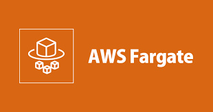
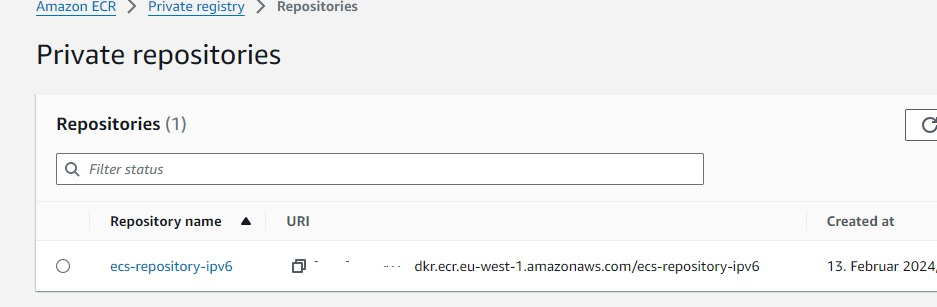
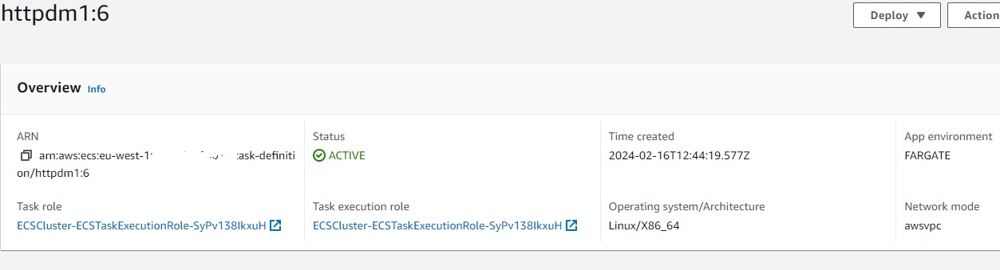
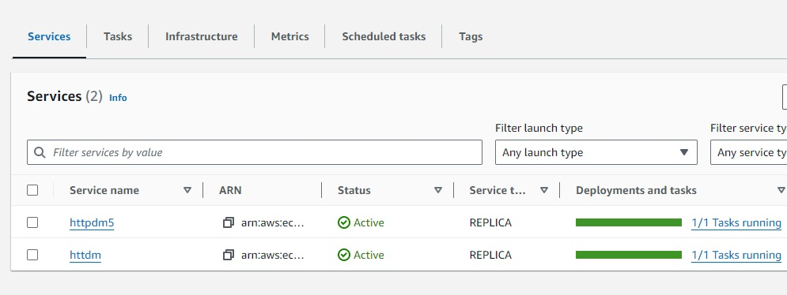
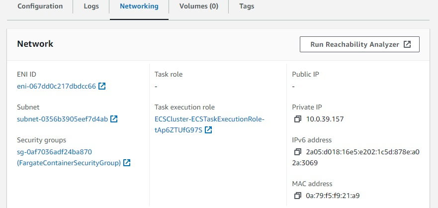
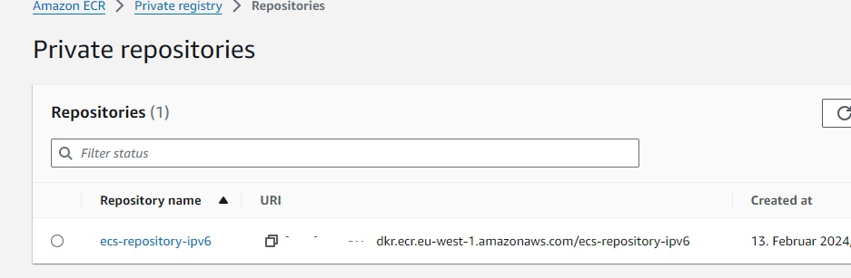
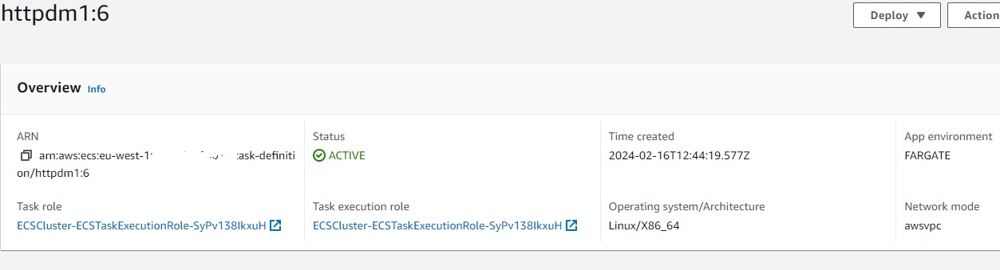
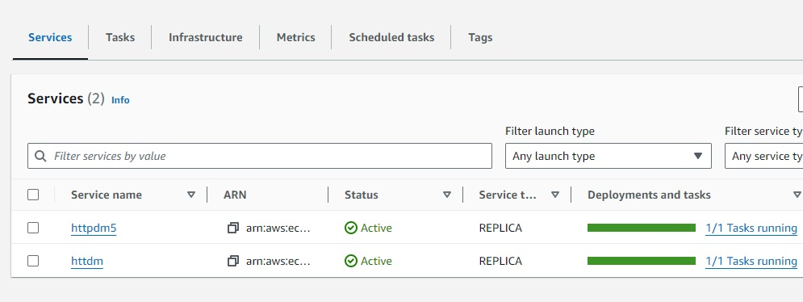
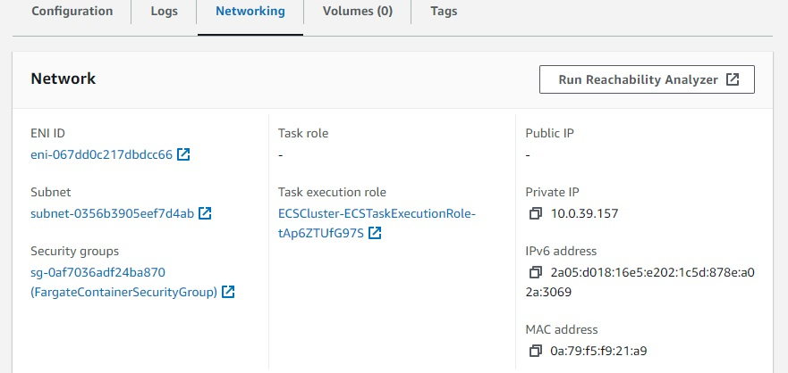

SCC
Brasil
os cloud gurus
Software Cloud Consulting
Your software development, cloud, consulting & shoring company
VPC IPv6 - Running Fargate in private Subnets

How to run a Fargate or ECS Service on IPv6 ? This short tutorial will try to explain this challenge
AWS accounced already some time ago ECS and Fargate now also supports IPv6 Dual Stack.
It is also listed in the supported Dual Stack services, see
IPv6 Support
So let's try it out, if it really works.
But on my tests, I figured out, it's not really easy running a Fargate Service in a private Subnet in a IPv6 dual-stack Subnet.
You will face a couple of problems and have to perform a couple of steps to get it running.
Let's cover in this blog, what is required to get it working.
First we need a VPC in dual-stack mode, please have a look into this blog how to set it up.
VPC IPv6 Introduction
You will also find some examples for CloudFormation, Terraform and CDK in my Github Repo to create the VPC with IaC .
Github Wolfgang Unger - AWS IPv6
Make sure you have public and private Subnets and the Routes are setup correct.
No NAT should be existing, only a EgressOnly IGW.
The private Subnets should route IPv6 traffic through the EgressOnly IGW.
IPv4 traffic will not be possible from the private Subnets to the internet, since we got no NAT.
(This will cause us problems later on )
AWS accounced IPv6 is not supported for Fargate and ECS but forget to mention a little detail.
You have to enable IPv6 Support in your Account ECS settings, its disable by default in February 2024
As you might know in the Elastic Container Service you have Account Settings in the menu on the left side.
Unfortunatelly you can't set it here. You need to activate IPv6 with CLI.
Either by :
aws ecs put-account-setting-default --name dualStackIPv6 --value enabled (--region eu-west-1)
or
aws ecs put-account-setting --name dualStackIPv6 --value enabled (--region eu-west-1)
with or region parameter for one region or without for all regions.
Of course we need a Container to run and also a Repo to store the Image.
I will use a simple httpd Container for my tests.
You find the Dockerfile also in my repo in /docker.
We will run a image FROM httpd:2.4
Next we need a ECR repo to upload and later on pull our image, so lets create a ECR private Repo.

After building our httpd Image we push it to our ECR Repo
docker push account.dkr.ecr.eu-west-2.amazonaws.com/ecs-repository-ipv6:httpd
Now we can create our Cluster and a Task Definition to run on later.
For the Cluster is not much to configure, for the Task Definition we will define:
NetworkMode: awsvpc
App Environment : Fargate
the Container Port ( can be 80 to start) and a Execution Role for Fargate.

Now we can create a Service based on our Task Definition.
We will define :
Our Cluster
Launch Type: Fargate
Application Type : Service
Service Name: httpd
Desired Tasks: 1
Networking:
Our IPv6 dual-stack VPC
Subnets: Our private Subnets
Security Group : Create one or chose an existing one, make sure you have Port 80 open for IPv6 and IPv4 . Will become an issue later on
Public IP : Turned Off
Lets run our service and see what will happen.
It will create a service httpd in our cluster and try to run a task.
But the taks will not start successfully, after 3 attempts to deploy the task, it will fail:
ResourceInitializationError: unable to pull secrets or registry auth: execution resource retrieval failed:
unable to retrieve ecr registry auth: service call has been retried 3 time(s): RequestError:
send request failed caused by: Post "https://api.ecr.eu-west-1.amazonaws.com/": dial tcp [64:ff9b::a00:1322]:443: i/o timeout. Please check your task network configuration.
During the deployment attempts I took a look on the task, it recieved an ENI with a private IPv4 and IPv6 address.
No public IPv6 address, by purpose.
Looks like the taks can't pull the image with IPv6 from ECR. And with IPv4 it will work neither, since I have
no NAT and routes to the internet for IPv4.
I will try one more time, for now in the public subnet and Public IP : Turned On.
The service becomes healthy, so our Docker Image is fine and our Cluster also works in general.
The problem seems that the Enpoint for ECR is not IPv6 ready.
We will need to pull our Image with IPv4.
Since our VPC got no routes for private IPv4 addresses to the internet and we also got no plans to add a NAT,
we need to create VPC enpoints to enable our task to pull the image from ECR with IPv4 address
See the Amazon documentation on
Amazon ECR interface VPC endpoints
In VPC you find endpoints in the left menu, select create Endoint and create
2 interface Endpoints for
com.amazonaws.region.ecr.dkr
and
com.amazonaws.region.ecr.api
both linked to your IPv6 VPC and private Subnets.
You need to create also a Gateway Endpoint to
com.amazonaws.region.s3
I struggled on this part, because the documentation doesn't mention an important detail.
It's not enough to create these 3 endpoints, the interface endpoints must also have
your fargate security group assigned. When creating the endpoint, it will only assign the Default SG of the VPC.
If you run your Service with the Default SG you won't have a problem, but I am deploying the
Service with IaC and have a dedicated SG for my Service. This caused me a headache.
So, don't forget to add your Service Security Group to the 2 interface endpoints.
Keep in mind, these enpoints are not for free, one will cost us about 7$ a month (not included data transfer costs).
So this is not really a much better solution than a NAT, I hope, we will see IPv6 support for ECR soon.
Will our Service now finally become healthy?
No... at least not, if we enable Log Collection on the Task Definition.
The communication from the task to CloudWatch will fail. We would need another enpoint (com.amazonaws.region.logs), to enable this.
But I am a little frustrated and out of patience now, so I simply disable Log Collection for now.
And ....Eureka ! The Service becomes healthy.

Lets look at our task, respectively on the Network Settings:

No public IP, a private IPv4 address and and a IPv6 address.
The ENI also got both addresses.
It was a hard piece of work, but finally the service is running .
Thanks for Joel Brandenburg from AWS for giving me support on the VPC enpoints part.
I have a example in my Github Repo with a Fargate Service with a ALB.
There is also still an issue here.
We cannot select IpAddressType: ipv6 on the TargetGroup.
Our Dual Stack Fargate Service will pass its IPv4 address, not the IPv6 address and this will cause an error.
For now we have to register the fargate service as target with its IPv4 address.
Therefore :
IpAddressType: ipv4
TargetType: ip
For your first tests you should try by WebConsole, this will keeps things easier.
Once you got your service running, you can start with Iac.
Have a look in my Repo, wou will find examples there, the repo is in work, keep that in mind. Stay tuned
The repo (under construction) is :
Github Wolfgang Unger - AWS IPv6
It is quite some work to get a Fargate Service running for the first time and find and solve all issues.
Out of the box, your service will not become healthy.
You have to enable dualStackIPv6 ECS setting for your account first with CLI.
The ECR enpoint is not IPv6 ready. You won't be able to pull the image by IPv6 (February 2024).
So it must be via the IPv4 address of the task/ENI.
Therefore we need VPC endpoints if we don't want to add a NAT.
And don't forget to add your Fargate Security Group to the interface endpoints.
Have fun and also a little bit patience to get it running.
See IaC examples in CloudFormation, Terraform and CDK in this repo
It is under constrcution, stay tuned !
Github Wolfgang Unger - AWS IPv6
The blog for introduction and how to setup a IPv6 VPC.
VPC IPv6 Introduction
References: By Wolfgang Unger
Introduction
How to run a Fargate or ECS Service on IPv6 ? This short tutorial will try to explain this challenge
AWS accounced already some time ago ECS and Fargate now also supports IPv6 Dual Stack.
It is also listed in the supported Dual Stack services, see
IPv6 Support
So let's try it out, if it really works.
But on my tests, I figured out, it's not really easy running a Fargate Service in a private Subnet in a IPv6 dual-stack Subnet.
You will face a couple of problems and have to perform a couple of steps to get it running.
Let's cover in this blog, what is required to get it working.
VPC
First we need a VPC in dual-stack mode, please have a look into this blog how to set it up.
VPC IPv6 Introduction
You will also find some examples for CloudFormation, Terraform and CDK in my Github Repo to create the VPC with IaC .
Github Wolfgang Unger - AWS IPv6
Make sure you have public and private Subnets and the Routes are setup correct.
No NAT should be existing, only a EgressOnly IGW.
The private Subnets should route IPv6 traffic through the EgressOnly IGW.
IPv4 traffic will not be possible from the private Subnets to the internet, since we got no NAT.
(This will cause us problems later on )
ECS/Fargate Preconditions
AWS accounced IPv6 is not supported for Fargate and ECS but forget to mention a little detail.
You have to enable IPv6 Support in your Account ECS settings, its disable by default in February 2024
As you might know in the Elastic Container Service you have Account Settings in the menu on the left side.
Unfortunatelly you can't set it here. You need to activate IPv6 with CLI.
Either by :
aws ecs put-account-setting-default --name dualStackIPv6 --value enabled (--region eu-west-1)
or
aws ecs put-account-setting --name dualStackIPv6 --value enabled (--region eu-west-1)
with or region parameter for one region or without for all regions.
ECR and Docker Container
Of course we need a Container to run and also a Repo to store the Image.
I will use a simple httpd Container for my tests.
You find the Dockerfile also in my repo in /docker.
We will run a image FROM httpd:2.4
Next we need a ECR repo to upload and later on pull our image, so lets create a ECR private Repo.

After building our httpd Image we push it to our ECR Repo
docker push account.dkr.ecr.eu-west-2.amazonaws.com/ecs-repository-ipv6:httpd
ECS Cluster and Task Definition
Now we can create our Cluster and a Task Definition to run on later.
For the Cluster is not much to configure, for the Task Definition we will define:
NetworkMode: awsvpc
App Environment : Fargate
the Container Port ( can be 80 to start) and a Execution Role for Fargate.

Create the Service
Now we can create a Service based on our Task Definition.
We will define :
Our Cluster
Launch Type: Fargate
Application Type : Service
Service Name: httpd
Desired Tasks: 1
Networking:
Our IPv6 dual-stack VPC
Subnets: Our private Subnets
Security Group : Create one or chose an existing one, make sure you have Port 80 open for IPv6 and IPv4 . Will become an issue later on
Public IP : Turned Off
Run the Service
Lets run our service and see what will happen.
It will create a service httpd in our cluster and try to run a task.
But the taks will not start successfully, after 3 attempts to deploy the task, it will fail:
ResourceInitializationError: unable to pull secrets or registry auth: execution resource retrieval failed:
unable to retrieve ecr registry auth: service call has been retried 3 time(s): RequestError:
send request failed caused by: Post "https://api.ecr.eu-west-1.amazonaws.com/": dial tcp [64:ff9b::a00:1322]:443: i/o timeout. Please check your task network configuration.
During the deployment attempts I took a look on the task, it recieved an ENI with a private IPv4 and IPv6 address.
No public IPv6 address, by purpose.
Looks like the taks can't pull the image with IPv6 from ECR. And with IPv4 it will work neither, since I have
no NAT and routes to the internet for IPv4.
I will try one more time, for now in the public subnet and Public IP : Turned On.
The service becomes healthy, so our Docker Image is fine and our Cluster also works in general.
The problem seems that the Enpoint for ECR is not IPv6 ready.
We will need to pull our Image with IPv4.
Create VPC endpoints for ECR
Since our VPC got no routes for private IPv4 addresses to the internet and we also got no plans to add a NAT,
we need to create VPC enpoints to enable our task to pull the image from ECR with IPv4 address
See the Amazon documentation on
Amazon ECR interface VPC endpoints
In VPC you find endpoints in the left menu, select create Endoint and create
2 interface Endpoints for
com.amazonaws.region.ecr.dkr
and
com.amazonaws.region.ecr.api
both linked to your IPv6 VPC and private Subnets.
You need to create also a Gateway Endpoint to
com.amazonaws.region.s3
I struggled on this part, because the documentation doesn't mention an important detail.
It's not enough to create these 3 endpoints, the interface endpoints must also have
your fargate security group assigned. When creating the endpoint, it will only assign the Default SG of the VPC.
If you run your Service with the Default SG you won't have a problem, but I am deploying the
Service with IaC and have a dedicated SG for my Service. This caused me a headache.
So, don't forget to add your Service Security Group to the 2 interface endpoints.
Keep in mind, these enpoints are not for free, one will cost us about 7$ a month (not included data transfer costs).
So this is not really a much better solution than a NAT, I hope, we will see IPv6 support for ECR soon.
Will our Service now finally become healthy?
No... at least not, if we enable Log Collection on the Task Definition.
The communication from the task to CloudWatch will fail. We would need another enpoint (com.amazonaws.region.logs), to enable this.
But I am a little frustrated and out of patience now, so I simply disable Log Collection for now.
And ....Eureka ! The Service becomes healthy.

Lets look at our task, respectively on the Network Settings:

No public IP, a private IPv4 address and and a IPv6 address.
The ENI also got both addresses.
It was a hard piece of work, but finally the service is running .
Thanks for Joel Brandenburg from AWS for giving me support on the VPC enpoints part.
ALB in front of the Service
I have a example in my Github Repo with a Fargate Service with a ALB.
There is also still an issue here.
We cannot select IpAddressType: ipv6 on the TargetGroup.
Our Dual Stack Fargate Service will pass its IPv4 address, not the IPv6 address and this will cause an error.
For now we have to register the fargate service as target with its IPv4 address.
Therefore :
IpAddressType: ipv4
TargetType: ip
IaC
For your first tests you should try by WebConsole, this will keeps things easier.
Once you got your service running, you can start with Iac.
Have a look in my Repo, wou will find examples there, the repo is in work, keep that in mind. Stay tuned
The repo (under construction) is :
Github Wolfgang Unger - AWS IPv6
Conclusion
It is quite some work to get a Fargate Service running for the first time and find and solve all issues.
Out of the box, your service will not become healthy.
You have to enable dualStackIPv6 ECS setting for your account first with CLI.
The ECR enpoint is not IPv6 ready. You won't be able to pull the image by IPv6 (February 2024).
So it must be via the IPv4 address of the task/ENI.
Therefore we need VPC endpoints if we don't want to add a NAT.
And don't forget to add your Fargate Security Group to the interface endpoints.
Have fun and also a little bit patience to get it running.
See IaC examples in CloudFormation, Terraform and CDK in this repo
It is under constrcution, stay tuned !
Github Wolfgang Unger - AWS IPv6
The blog for introduction and how to setup a IPv6 VPC.
VPC IPv6 Introduction
AWS Documentation
IPv6 on AWS
Migrate your VPC from IPv4 to IPv6
IPv6 dual-stack Fargate
ECS Account Settings
ECS Account Settings with CLI
Autor

Wolfgang Unger
AWS Architect & Developer
6 x AWS Certified
1 x Azure Certified
A Cloud Guru Instructor
Certified Oracle JEE Architect
Certified Scrum Master
Certified Java Programmer
Passionate surfer & guitar player